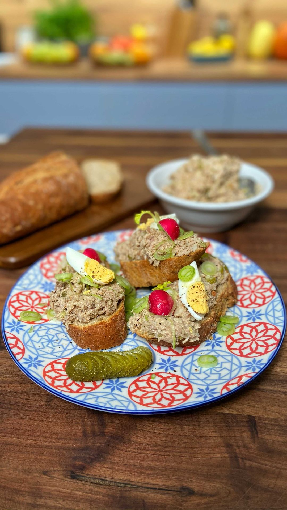

Mäsová pomazánka — Normy Jedál
Zbyl vám kousek masa od oběda, nebo třeba z vývaru? Tak už teď si můžete začít chystat tuhle výbornou pomazánku na odpolední svačinu, nebo k večeři.
A pokud zbytky masa nemáte, dejte nějaký kousek péct... večeři pořád v pohodě stíháte 🙃 Křupavý chleba a tahle pomazánka = nejlepší kombo!
#spoluprace @pennymarketcz #masovapomazanka #pomazanka #leftovers #konecplytvani #atope